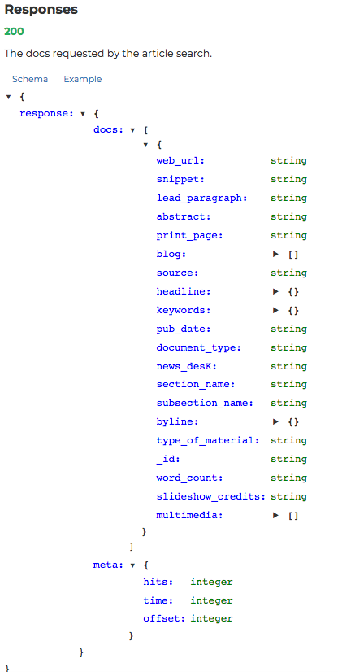

You've started taking a look at JSON files and you'll continue to explore how to navigate and traverse these files. One common use case of JSON files will be when you are connecting to various websites through their established APIs to retrieve data from them. With these, you are typically given a schema for how the data is structured and then will use this knowledge to retrieve pertinent information.
You will be able to:
- Use the JSON module to load and parse JSON documents
- Extract data using predefined JSON schemas
- Convert JSON to a pandas DataFrame
In this lesson, you'll take a look at the response from the New York Times API. The general idea is that the New York Times makes some of its data available over the web, and it uses the JSON format to do so.
Here's the JSON schema provided for a section of the NY Times API: 
or a more detailed view (truncated):

You can see that the master structure is a dictionary and has a key named 'response'. The value associated with the 'response' key is also a dictionary and has two keys: 'docs' and 'meta'. As you continue to examine the schema hierarchy, you'll notice the vast majority of the elements comprising this data structure, in this case, are dictionaries.
As we have done in previous lessons, let's start by importing this data from the file. The code below uses the json module (documentation here) and built-in open function to load the data from a JSON file into a Python object called data.
In the cell below, first import the json library, then type the following code to load the file and assign it to the variable
data:
with open('ny_times_response.json', 'r') as f:
data = json.load(f)
# replace this comment with the code to import the JSON library
# replace this comment with the code to load the desired file and assign it to the variableNow we can inspect what we loaded with some tools we are already familiar with.
In the cell below, use the
type()function to print the data type of the loaded filedata, then print the keys of the file using thekeys()method.
# replace this comment with the code to print the data type of the file `data`
# replace this comment with the code to print the keys of the file# -EXPECTED OUTPUT-
# <class 'dict'>
# dict_keys(['status', 'copyright', 'response'])You should see that there are two additional keys 'status' and 'copyright' which were not shown in the schema documentation. As with most forms of documentation, it's important to be aware that published schemas may differ somewhat from the actual data, and your code should be able to handle these unexpected differences, within reason.
Looking at the schema, you might be interested in retrieving a specific piece of data, such as the articles' headlines. Notice that this is a key under 'docs', which is under 'response'. So the schema is roughly: data --> 'response' --> 'docs' --> 'headline', something like data['response']['docs']['headline'].
Let's see what happens if we try that:
In the cell below, type the following code to retreive the data:
data['response']['docs']['headline']
# replace this comment with the code to show the contents of data->response->docs->headline# -EXPECTED OUTPUT-
"""
---------------------------------------------------------------------------
TypeError Traceback (most recent call last)
<ipython-input-3-0cb4d3140f8a> in <module>
1 # replace this comment with the code to show the contents of data->response->docs->headline
----> 2 data['response']['docs']['headline']
TypeError: list indices must be integers or slices, not str
"""Ok, this error message is saying that somewhere along the way, we treated something like a dictionary when it was actually a list. Let's break down that chain of commands to figure out what went wrong.
We are pretty sure that data['response'] will not cause an error, since we already checked that data is type dict, and that 'response' is one of the keys. But what is the type of data['response']?
# replace this comment with the code to display the data type in data->response# -EXPECTED OUTPUT-
# dictOk, that's a dictionary, too. How about data['response']['docs']?
# replace this comment with the code to display the data type of the data in data->response->docs# -EXPECTED OUTPUT-
# listSo, that is the source of the error. We tried to treat this as a dictionary (accessing the value associated with the key 'headline') but it's a list.
If you scroll back up to the schema pictured above, this makes sense. The value associated with the 'docs' key is shown surrounded by [ and ], right before the { and }, indicating that this is a list of dictionaries, not just a dictionary.
You'll run into this kind of distinction repeatedly when working with JSON data. Sometimes values will be nested in unexpected ways, or you'll miss a key detail when you're skimming the schema. What's most important is that you're able to keep going and figure out what went wrong, not that you get it right on the first try.
Now that we know that this is a list, let's extract it and print out some more information about it:
In the cell below, extract the data in
data['response']['docs']and assign it to the variabledocs. Then display the following information about it:
- the data type using
type() - the length using
len() - the contents of the first element of the list using the index
[0]Try to make your output match the -EXPECTED OUTPUT-, we will help with the first line:
print("`docs` is a data structure of type", type(docs))
or
print(f"`docs` is a data structure of type {type(docs)}")
docs = # replace this comment with the code to extract the desired data and assign it to the variable
# replace this comment with the code to print the data type of `docs`
# replace this comment with the code to print the length
# replace this comment with the code to print the data type of the first element# -EXPECTED OUTPUT-
# `docs` is a data structure of type <class 'list'>
# It contains 9 elements
# The first element is type <class 'dict'>This confirms what we expected. Now we can loop over that list of dictionaries and print the values associated with the 'headline' keys:
In the following cell write a for loop or list comprehension to display each element one by one. To do this use one of the following code blocks:
with a for loop:
for doc in docs:
print(doc['headline'])
or with list comprehension:
print([doc['headline'] for doc in docs])
# replace this comment with either the for loop or the list comprehension to print each headline# -EXPECTED OUTPUT-
# for loop
"""
{'main': "HIGGINS, SPENT $22,189.53.; Governor-Elect's Election Expenses -- Harrison $9,220.28.", 'kicker': None, 'content_kicker': None, 'print_headline': None, 'name': None, 'seo': None, 'sub': None}
{'main': 'GARDEN BOUTS CANCELED; Mauriello Says He Could Not Be Ready on Nov. 3', 'kicker': '1', 'content_kicker': None, 'print_headline': None, 'name': None, 'seo': None, 'sub': None}
{'main': 'Stock Drop Is Biggest in 2 Months--Margin Rise Held Factor in Lightest Trading of 1955', 'kicker': '1', 'content_kicker': None, 'print_headline': None, 'name': None, 'seo': None, 'sub': None}
{'main': 'MUSIC OF THE WEEK', 'kicker': None, 'content_kicker': None, 'print_headline': None, 'name': None, 'seo': None, 'sub': None}
{'main': 'Anacomp Inc. reports earnings for Qtr to March 31', 'kicker': None, 'content_kicker': None, 'print_headline': None, 'name': None, 'seo': None, 'sub': None}
{'main': 'Brooklyn Routs Yeshiva', 'kicker': '1', 'content_kicker': None, 'print_headline': None, 'name': None, 'seo': None, 'sub': None}
{'main': 'Albuquerque Program Gives Drinkers a Lift', 'kicker': '1', 'content_kicker': None, 'print_headline': None, 'name': None, 'seo': None, 'sub': None}
{'main': 'Front Page 7 -- No Title', 'kicker': '1', 'content_kicker': None, 'print_headline': None, 'name': None, 'seo': None, 'sub': None}
{'main': 'UNIONS AND BUILDERS READY FOR LONG FIGHT; None of the Strikers Back - Lock-Out Soon in Effect. 23,000 ALREADY INVOLVED Orders Sent to Every Building Employer Within Twenty-five Miles -- House-smiths Vote Not to Strike.', 'kicker': None, 'content_kicker': None, 'print_headline': None, 'name': None, 'seo': None, 'sub': None}
"""
# or
# list comprehension
"""
[{'main': "HIGGINS, SPENT $22,189.53.; Governor-Elect's Election Expenses -- Harrison $9,220.28.", 'kicker': None, 'content_kicker': None, 'print_headline': None, 'name': None, 'seo': None, 'sub': None}, {'main': 'GARDEN BOUTS CANCELED; Mauriello Says He Could Not Be Ready on Nov. 3', 'kicker': '1', 'content_kicker': None, 'print_headline': None, 'name': None, 'seo': None, 'sub': None}, {'main': 'Stock Drop Is Biggest in 2 Months--Margin Rise Held Factor in Lightest Trading of 1955', 'kicker': '1', 'content_kicker': None, 'print_headline': None, 'name': None, 'seo': None, 'sub': None}, {'main': 'MUSIC OF THE WEEK', 'kicker': None, 'content_kicker': None, 'print_headline': None, 'name': None, 'seo': None, 'sub': None}, {'main': 'Anacomp Inc. reports earnings for Qtr to March 31', 'kicker': None, 'content_kicker': None, 'print_headline': None, 'name': None, 'seo': None, 'sub': None}, {'main': 'Brooklyn Routs Yeshiva', 'kicker': '1', 'content_kicker': None, 'print_headline': None, 'name': None, 'seo': None, 'sub': None}, {'main': 'Albuquerque Program Gives Drinkers a Lift', 'kicker': '1', 'content_kicker': None, 'print_headline': None, 'name': None, 'seo': None, 'sub': None}, {'main': 'Front Page 7 -- No Title', 'kicker': '1', 'content_kicker': None, 'print_headline': None, 'name': None, 'seo': None, 'sub': None}, {'main': 'UNIONS AND BUILDERS READY FOR LONG FIGHT; None of the Strikers Back - Lock-Out Soon in Effect. 23,000 ALREADY INVOLVED Orders Sent to Every Building Employer Within Twenty-five Miles -- House-smiths Vote Not to Strike.', 'kicker': None, 'content_kicker': None, 'print_headline': None, 'name': None, 'seo': None, 'sub': None}]
"""Or if you want to just print the main headlines themselves with the following code:
In the cell below, type the following code to print the
mainelement of eachheadline:
with a for loop:
for doc in docs:
print(doc['headline']['main'])
or with list comprehension:
print([doc['headline']['main'] for doc in docs])
# replace this comment with the code to print each individual headline using either a for loop or list comprehension# -EXPECTED OUTPUT-
"""
HIGGINS, SPENT $22,189.53.; Governor-Elect's Election Expenses -- Harrison $9,220.28.
GARDEN BOUTS CANCELED; Mauriello Says He Could Not Be Ready on Nov. 3
Stock Drop Is Biggest in 2 Months--Margin Rise Held Factor in Lightest Trading of 1955
MUSIC OF THE WEEK
Anacomp Inc. reports earnings for Qtr to March 31
Brooklyn Routs Yeshiva
Albuquerque Program Gives Drinkers a Lift
Front Page 7 -- No Title
UNIONS AND BUILDERS READY FOR LONG FIGHT; None of the Strikers Back - Lock-Out Soon in Effect. 23,000 ALREADY INVOLVED Orders Sent to Every Building Employer Within Twenty-five Miles -- House-smiths Vote Not to Strike.
"""
# or with list comprehension
"""["HIGGINS, SPENT $22,189.53.; Governor-Elect's Election Expenses -- Harrison $9,220.28.", 'GARDEN BOUTS CANCELED; Mauriello Says He Could Not Be Ready on Nov. 3', 'Stock Drop Is Biggest in 2 Months--Margin Rise Held Factor in Lightest Trading of 1955', 'MUSIC OF THE WEEK', 'Anacomp Inc. reports earnings for Qtr to March 31', 'Brooklyn Routs Yeshiva', 'Albuquerque Program Gives Drinkers a Lift', 'Front Page 7 -- No Title', 'UNIONS AND BUILDERS READY FOR LONG FIGHT; None of the Strikers Back - Lock-Out Soon in Effect. 23,000 ALREADY INVOLVED Orders Sent to Every Building Employer Within Twenty-five Miles -- House-smiths Vote Not to Strike.']
"""Let's say we want to create a list of dictionaries containing information about the documents contained in this JSON. It should contain the publication date (value associated with pub_date key), word count (value associated with word_count key), and both the 'main' and 'kicker' associated with the headline key. This list should be called doc_info_list and should look something like this:
[
{
'headline_main': "HIGGINS, SPENT $22,189.53.; Governor-Elect's Election Expenses -- Harrison $9,220.28.",
'headline_kicker': None,
'pub_date': '1904-11-17T00:00:00Z',
'word_count': 213
},
{
'headline_main': 'GARDEN BOUTS CANCELED; Mauriello Says He Could Not Be Ready on Nov. 3',
'headline_kicker': '1',
'pub_date': '1944-10-23T00:00:00Z',
'word_count': 149
},
...
]The tricky part is, each dictionary needs to be "flat", meaning that each key is associated with a single string or number value, not a deeper data structure. So we need to flatten the nested headline dictionary.
It's also conventional when flattening data to make a compound name for the newly-created keys. So, let's call the new keys headline_main and headline_kicker.
Recall the structure of a headline dictionary:
Print out one of the
headlineelements by typing in the following code:
docs[2]['headline']
# replace this comment with the code to display one of the headline elements# -EXPECTED OUTPUT-
"""
{'main': 'Stock Drop Is Biggest in 2 Months--Margin Rise Held Factor in Lightest Trading of 1955',
'kicker': '1',
'content_kicker': None,
'print_headline': None,
'name': None,
'seo': None,
'sub': None}
"""So, first let's write a function that takes in that complete dictionary, and returns a copy with only the 'main' and 'kicker' keys and values, now labeled 'headline_main' and 'headline_kicker':
In the cell below, type the following code to extract the desired information:
def extract_headline_info(headline_dict):
result = {}
result['headline_main'] = headline_dict['main']
result['headline_kicker'] = headline_dict['kicker']
return result
# replace this comment with the code to define the desired functionThen we can test it out:
In the cell below, type the following code to test the function:
extract_headline_info(docs[2]['headline'])
# replace this comment with the code to test out the funtion# -EXPECTED OUTPUT-
"""
{'headline_main': 'Stock Drop Is Biggest in 2 Months--Margin Rise Held Factor in Lightest Trading of 1955',
'headline_kicker': '1'}
"""Now let's write another function that calls that function, then adds the pub_date and word_count keys and values:
In the cell below type the following code to define a function that calls our other function and adds the
pub_dateandword_countkeys and values:
def extract_doc_info(doc):
info = extract_headline_info(doc['headline'])
info['pub_date'] = doc['pub_date']
info['word_count'] = doc['word_count']
return info
# replace this comment with the code to define the desired functionAgain, testing it out on a couple examples:
In the cells below, type the following code to test the function changing the index as necessary:
extract_doc_info(docs[2])
# replace this comment with the code to test out the function on the element at index 2# -EXPECTED OUTPUT-
"""
{'headline_main': 'Stock Drop Is Biggest in 2 Months--Margin Rise Held Factor in Lightest Trading of 1955',
'headline_kicker': '1',
'pub_date': '1955-05-15T00:00:00Z',
'word_count': 823}
"""# replace this comment with the code to test out the function on the element at index 2# -EXPECTED OUTPUT-
"""
{'headline_main': "HIGGINS, SPENT $22,189.53.; Governor-Elect's Election Expenses -- Harrison $9,220.28.",
'headline_kicker': None,
'pub_date': '1904-11-17T00:00:00Z',
'word_count': 213}
"""Now we can loop over the full list and create doc_info_list:
In the cell below, type following code to create a loop that creates the desired list using the function just created, then print out the results:
either with a for loop:
doc_info_list = []
for doc in docs:
doc_info_list.append(extract_doc_info(doc))
doc_info_list
or with list comprehension:
doc_info_list = [extract_doc_info(doc) for doc in docs]
doc_info_list
# replace this comment with the code to create the desired list with a loop# -EXPECTED OUTPUT-
"""
Output exceeds the size limit. Open the full output data in a text editor
[{'headline_main': "HIGGINS, SPENT $22,189.53.; Governor-Elect's Election Expenses -- Harrison $9,220.28.",
'headline_kicker': None,
'pub_date': '1904-11-17T00:00:00Z',
'word_count': 213},
{'headline_main': 'GARDEN BOUTS CANCELED; Mauriello Says He Could Not Be Ready on Nov. 3',
'headline_kicker': '1',
'pub_date': '1944-10-23T00:00:00Z',
'word_count': 149},
{'headline_main': 'Stock Drop Is Biggest in 2 Months--Margin Rise Held Factor in Lightest Trading of 1955',
'headline_kicker': '1',
'pub_date': '1955-05-15T00:00:00Z',
'word_count': 823},
{'headline_main': 'MUSIC OF THE WEEK',
'headline_kicker': None,
'pub_date': '1904-11-06T00:00:00Z',
'word_count': 2609},
{'headline_main': 'Anacomp Inc. reports earnings for Qtr to March 31',
'headline_kicker': None,
'pub_date': '1992-05-06T00:00:00Z',
'word_count': 129},
{'headline_main': 'Brooklyn Routs Yeshiva',
'headline_kicker': '1',
'pub_date': '1972-12-24T00:00:00Z',
'word_count': 144},
{'headline_main': 'Albuquerque Program Gives Drinkers a Lift',
'pub_date': '1944-10-24T00:00:00Z',
'word_count': 29},
{'headline_main': 'UNIONS AND BUILDERS READY FOR LONG FIGHT; None of the Strikers Back - Lock-Out Soon in Effect. 23,000 ALREADY INVOLVED Orders Sent to Every Building Employer Within Twenty-five Miles -- House-smiths Vote Not to Strike.',
'headline_kicker': None,
'pub_date': '1904-08-06T00:00:00Z',
'word_count': 883}]
"""Thus we have successfully flattened the required data
You've also previously started to take a look at how to transform JSON to DataFrames. Investigating the schema, a good option for this could again be the value associated with the 'docs' key. While this still has nested data itself, it's often easier to load the entire contents as a DataFrame for viewing and then use additional functions to break apart the internally nested data from there.
So, first we will display the full information associated with the 'docs' key:
In the cell below, first import pandas using the standard alias, then type the code to create a DataFrame of the info found in data->response->docs:
pd.DataFrame(data['response']['docs'])
import pandas as pd
df = pd.DataFrame(data['response']['docs'])
df.shape# replace this comment with the code to import pandas using the standard alias
# replace this comment with the code to create the desired DataFrameNote that because the value associated with the 'headline' key is a dictionary, it is displayed in this crowded, messy way within the DataFrame, including { and ' characters.
Because doc_info_list is already flattened so the value associated with each key is just a number or string, it looks much neater when loaded into pandas:
In the cell below, type the following code to create a DataFrame from
doc_info_list:
pd.DataFrame(doc_info_list)
# replace this comment with the code to create the desired DataFrameWe could also re-create this from the raw data using pandas rather than base Python:
In the cell below, type the following code to create the DataFrame using pandas:
First, create a DataFrame of the raw docs info:
df = pd.DataFrame(data['response']['docs'])
Next, make new columns for headline_main and headline_kicker
df['headline_main'] = df['headline'].apply(lambda headline_dict: headline_dict['main'])
df['headline_kicker'] = df['headline'].apply(lambda headline_dict: headline_dict['kicker'])
Finally, subset to only the relevent columns and display the DataFrame and then display the DataFrame:
df = df[['headline_main', 'headline_kicker', 'pub_date', 'word_count']]
df
# replace this comment with the code to create DataFrame of raw docs info
# replace this comment with the code to make new headline_main and headline_kicker columns
# replace this comment with the code to subset to only the relevant columns
# replace this comment with the code to display the DataFrame# -EXPECTED OUTPUT-
# a pandas DataFrame with 9 rows and 5 columnsThis is a good general strategy for transforming nested JSON: create a DataFrame and then break out nested features into their own column features.
Finally, take a look at how you can write data back to JSON. Like loading, you first open a file (this time in write mode) and use the json package to interact with that file object. Only instead of json.load to load the contents of the file into a Python object, you call json.dump to write the contents of the Python object into the file.
In the cell below, type the following code to write the data to a JSON file:
with open('doc_info_list.json', 'w') as f:
json.dump(doc_info_list, f)
# replace this comment with the code to write the data to a json fileThen if we want to load that cleaned dataset for future use, we can open that new file:
In the cell below, type the following code to load the file we just created:
with open('doc_info_list.json') as f:
doc_info_list_from_disk = json.load(f)
# replace this comment with the code to load the file just createdThe new file should contain identical information to the original Python variable:
In the cell below, type the following code to check that the data in
doc_info_listis the same as the data indoc_info_list_from_disk:
doc_info_list_from_disk == doc_info_list
# replace this comment with the code to check that the two files contain the same data# -EXPECTED OUTPUT-
# TrueThere you have it. In this, you practiced using JSON some more, this time interpreting an example schema diagram in order to retrieve information. You also looked at a general procedure for transforming nested data to pandas DataFrames (create a DataFrame, and then break apart nested data using lambda functions to create additional columns). Finally, you also took a brief look at saving data to JSON files.